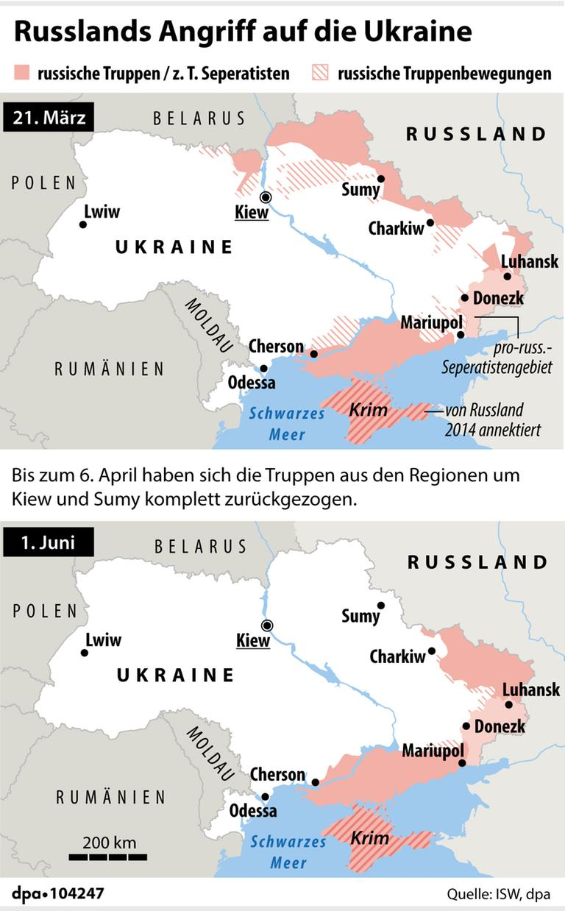
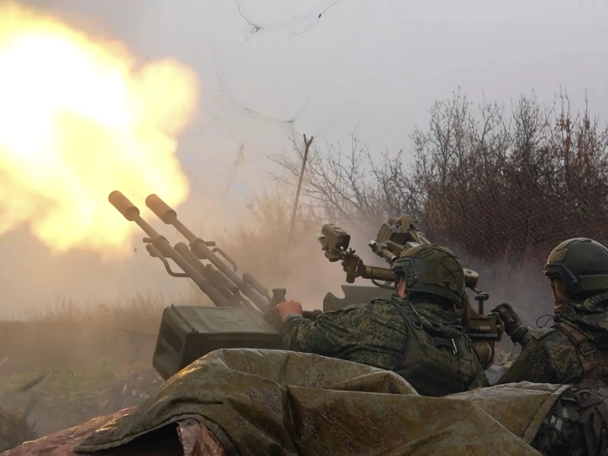

Ukraine Russland Krieg
Konflikt und Zeitstrahl
Auf dieser Seite kannst du wichtige Jahre und Ereignisse zum Konflikt zwischen Russland und der Ukraine selber eintragen.
Zeitstrahl
| Jahr / Datum | Was geschah? | Bild |
|---|---|---|

|
1. In den frühen Morgenstunden begann Russland mit einem großangelegten Angriff auf die Ukraine. 2. Russische Raketen trafen militärische Ziele und Flughäfen in vielen ukrainischen Städten. 3. Kurz vor dem Angriff erklärte der russische Präsident Wladimir Putin, Russland beginne eine „militärische Spezialoperation“. 4. Putin dachte, sie würden die Ukraine in wenigen Tagen besiegen und die Regierung stürzen. Jedoch begannen ukrainische Soldaten und viele Freiwillige, sich gegen die Angriffe zu wehren. 5. Dadurch wurde aus dem schnellen Angriff ein grosser Krieg, der bis heute andauert. |
 Karte der Angriffe Russlands auf die Ukraine im Februar 2022 |

|
Am 24. Februar 2022 begann Russland eine grossangelegte Invasion der Ukraine. In den ersten Tagen griffen russische Truppen die Ukraine aus mehreren Richtungen gleichzeitig an:
Norden: Angriff aus Belarus Richtung Hauptstadt Kiew Osten: Angriffe im Donbas-Gebiet Süden: Vormarsch von der Krim Besonders wichtig war der Angriff auf Kiew, da Russland versuchte, die Regierung schnell zu stürzen. Der Flughafen Hostomel bei Kiew wurde heftig umkämpft, da er strategisch wichtig war. Gleichzeitig wurden viele Städte mit Raketen beschossen, darunter: 1. Charkiw 2. Mariupol 3. Tschernihiw Viele Zivilisten flohen aus ihren Städten, und es entstand eine große Flüchtlingsbewegung. Ziel Russlands: schneller Sieg und Kontrolle über die Ukraine |

 |
| ____ | ________________________________________________________ | |
| ____ | ________________________________________________________ | |
| ____ | ________________________________________________________ | |
| ____ | ________________________________________________________ |